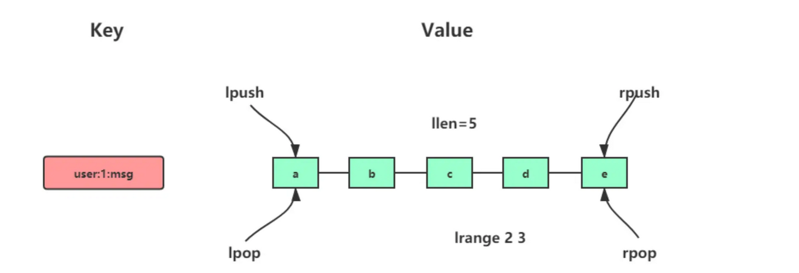
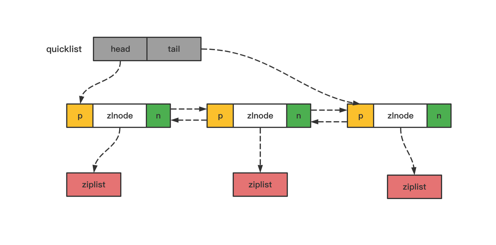
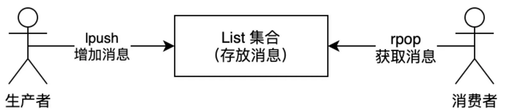
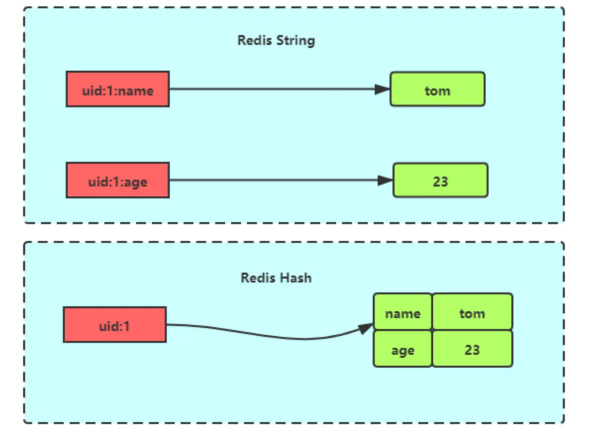
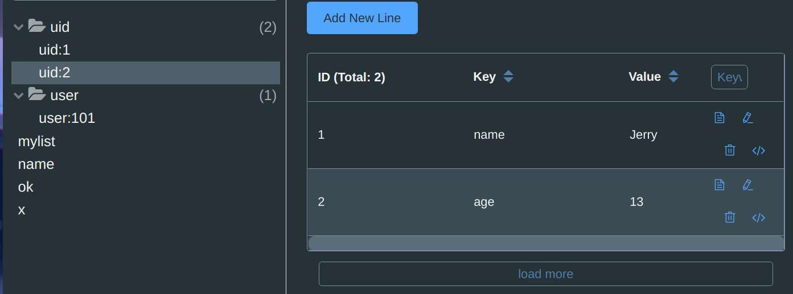
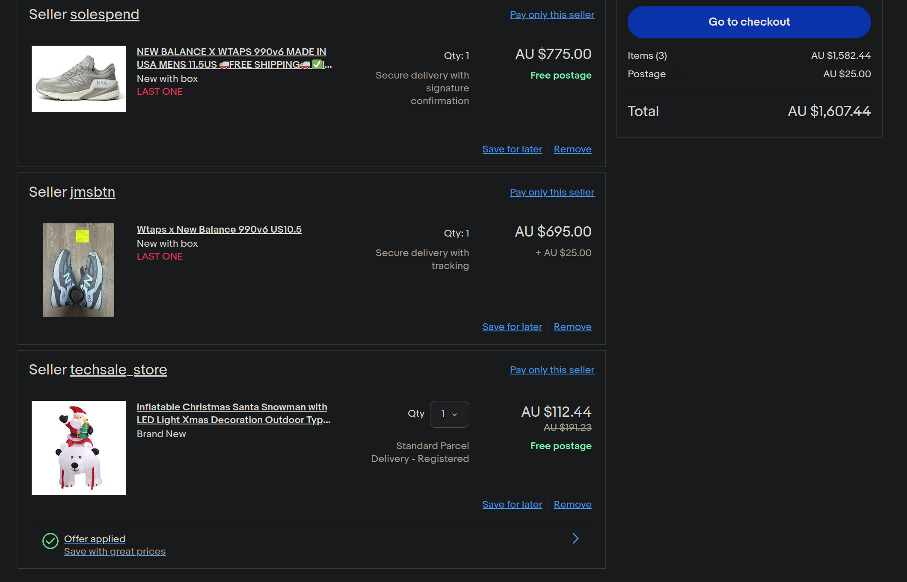

基础数据类型及运用场景
String
常用命令
普通字符串的基本操作：
# 设置 key-value 类型的值
> SET name lin
OK
# 根据 key 获得对应的 value
> GET name
"lin"
# 判断某个 key 是否存在
> EXISTS name
(integer) 1
# 返回 key 所储存的字符串值的长度
> STRLEN name
(integer) 3
# 删除某个 key 对应的值
> DEL name
(integer) 1
批量设置 :
# 批量设置 key-value 类型的值
> MSET key1 value1 key2 value2
OK
# 批量获取多个 key 对应的 value
> MGET key1 key2
1) "value1"
2) "value2"
计数器（字符串的内容为整数的时候可以使用）：
# 设置 key-value 类型的值
> SET number 0
OK
# 将 key 中储存的数字值增一
> INCR number
(integer) 1
# 将key中存储的数字值加 10
> INCRBY number 10
(integer) 11
# 将 key 中储存的数字值减一
> DECR number
(integer) 10
# 将key中存储的数字值键 10
> DECRBY number 10
(integer) 0
过期（默认为永不过期）：
# 设置 key 在 60 秒后过期（该方法是针对已经存在的key设置过期时间）
> EXPIRE name 60
(integer) 1
# 查看数据还有多久过期
> TTL name
(integer) 51
#设置 key-value 类型的值，并设置该key的过期时间为 60 秒
> SET key value EX 60
OK
> SETEX key 60 value
OK
不存在就插入：
# 不存在就插入（not exists）
>SETNX key value
(integer) 1
应用场景
缓存对象
使用 String 来缓存对象有两种方式：
- 直接缓存整个对象的 JSON，命令例子：
SET user:1 '{"name":"xiaolin", "age":18}'。 - 采用将 key 进行分离为 user:ID:属性，采用 MSET 存储，用 MGET 获取各属性值，命令例子：
MSET user:1:name xiaolin user:1:age 18 user:2:name xiaomei user:2:age 20。
常规计数
阅读量计数：
# 初始化文章的阅读量
> SET aritcle:readcount:1001 0
OK
#阅读量+1
> INCR aritcle:readcount:1001
(integer) 1
#阅读量+1
> INCR aritcle:readcount:1001
(integer) 2
#阅读量+1
> INCR aritcle:readcount:1001
(integer) 3
# 获取对应文章的阅读量
> GET aritcle:readcount:1001
"3"
分布式锁：
SET 命令中有个NX参数 ，当key不存在的时候才插入根据这个功能
- nx 如key不存在的话，则插入，可以表示成加锁成功
- nx如果key存在的话，则插入失败，可以表示加锁失败
SET lock_key unique_value NX PX 10000
#px 表示过期时间，为了防止死锁
存储用户登录信息：
如果是单一系统，用户信息或者说session则key存储在服务器中，但是如果是分布式系统，用户的登录信息或者其他登录或者更新的其他用户信息，如果只存在A服务器中，B服务器没有共享这些信息，则会出现要求用户再次登录。这时候如何将这些相信息存储在redis中，服务器A 和服务器B 都到redis中获取信息就解决了相关问题。
List
介绍
list是简单的字符串列表，根据插入顺序排序，可以从头部和尾部插入数据，列表最大长度是2^32 - 1
内部实现
在但是在 Redis 3.2 版本之后，List 数据类型底层数据结构就只由 quicklist 实现了，替代了双向链表和压缩列表

quicklist(待补充….)

-
quicklistNode
typedef struct quicklistNode { struct quicklistNode *prev; //前一个quicklistNode struct quicklistNode *next; //后一个quicklistNode unsigned char *zl; //quicklistNode指向的ziplist unsigned int sz; //ziplist的字节大小 unsigned int count : 16; //ziplist中的元素个数 unsigned int encoding : 2; //编码格式，原生字节数组或压缩存储 unsigned int container : 2; //存储方式 unsigned int recompress : 1; //数据是否被压缩 unsigned int attempted_compress : 1; //数据能否被压缩 unsigned int extra : 10; //预留的bit位 } quicklistNode;
typedef struct quicklist {
quicklistNode *head; // quicklist的链表头
quicklistNode *tail; // quicklist的链表尾
unsigned long count; // 所有ziplist中的总元素个数
unsigned long len; // quicklistNodes的个数
int fill : QL_FILL_BITS; // 单独解释
unsigned int compress : QL_COMP_BITS; // 具体含义是两端各有compress个节点不压缩
...
} quicklist;
常用命令
# 将一个或多个值value插入到key列表的表头(最左边)，最后的值在最前面
LPUSH key value [value ...]
# 将一个或多个值value插入到key列表的表尾(最右边)
RPUSH key value [value ...]
# 移除并返回key列表的头元素
LPOP key
# 移除并返回key列表的尾元素
RPOP key
# 返回列表key中指定区间内的元素，区间以偏移量start和stop指定，从0开始
LRANGE key start stop
# 从key列表表头弹出一个元素，没有就阻塞timeout秒，如果timeout=0则一直阻塞
BLPOP key [key ...] timeout
# 从key列表表尾弹出一个元素，没有就阻塞timeout秒，如果timeout=0则一直阻塞
BRPOP key [key ...] timeout
应用场景
消息队列
redis中的List是先进先出的，满足使用场景。

- producer通过LPUSH key value [value…]向List集合中存放消息
- consumer通过 RPOP key 从集合中获取消息
如何producer没有生成消息，消息集合中也没有数据，而consumer还是一直读取消息，会造成cpu不必要的cpu占用，这时候consumer可以用BRPOP(blocking right pop )，BRPOP命令也称为阻塞式读取，客户端在没有读到队列数据时，自动阻塞，直到有新的数据写入队列，再开始读取新数据
如何处理重复的消息？
消费者要实现重复消息的判断，需要 2 个方面的要求：
- 每个消息都有一个全局的 ID。
- 消费者要记录已经处理过的消息的 ID
因为list不会生成id，所以我们要自行生成id
我们执行以下命令，就把一条全局 ID 为 111000102、库存量为 99 的消息插入了消息队列：
> LPUSH mq "111000102:stock:99"
(integer) 1
List 作为消息队列有什么缺陷？
List 不支持多个消费者消费同一条消息，因为一旦消费者拉取一条消息后，这条消息就从 List 中删除了，无法被其它消费者再次消费。
要实现一条消息可以被多个消费者消费，那么就要将多个消费者组成一个消费组，使得多个消费者可以消费同一条消息，但是 List 类型并不支持消费组的实现。
hash
介绍
hash是键值对集合(key-value) eg: value[{fields:,value},….]
string和hash对比，hash更适合用来存储对象

内部实现
Hash类型是通过压缩列表和哈希表实现的在 Redis 7.0 中，压缩列表数据结构已经废弃了，交由 listpack 数据结构来实现了。
- 如果哈希类型元素个数小于
512个（默认值，可由hash-max-ziplist-entries配置），所有值小于64字节（默认值，可由hash-max-ziplist-value配置）的话，Redis 会使用压缩列表作为 Hash 类型的底层数据结构； - 如果哈希类型元素不满足上面条件，Redis 会使用哈希表作为 Hash 类型的 底层数据结构。
常用命令
# 存储一个哈希表key的键值
HSET key field value
# 获取哈希表key对应的field键值
HGET key field
# 在一个哈希表key中存储多个键值对
HMSET key field value [field value...]
# 批量获取哈希表key中多个field键值
HMGET key field [field ...]
# 删除哈希表key中的field键值
HDEL key field [field ...]
# 返回哈希表key中field的数量
HLEN key
# 返回哈希表key中所有的键值
HGETALL key
# 为哈希表key中field键的值加上增量n
HINCRBY key field n

应用场景
购物车

- field(商品id)
- 数量(value)
- 增加数量（HINCRBY）
- key(用户id)
- 购物车数量(hlen)
- 全选(hgetall)
用户id [{商品id，数量}….,{商品id,数量} ]
...